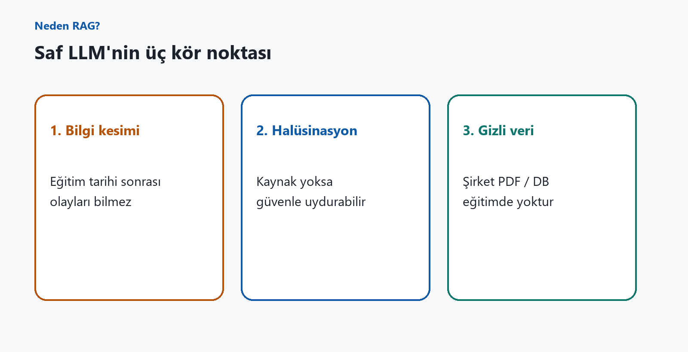
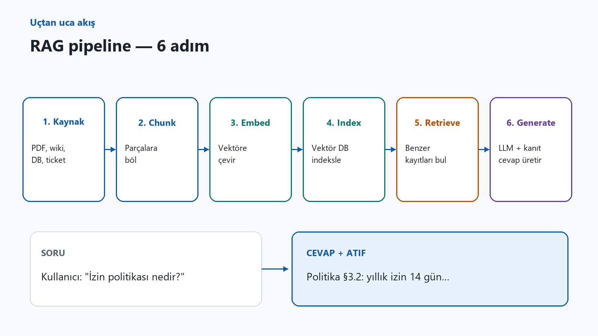
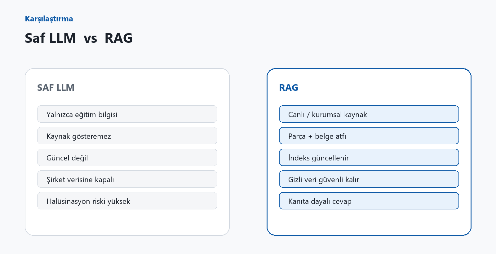
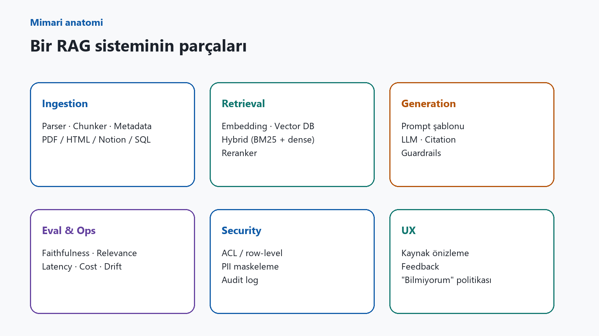
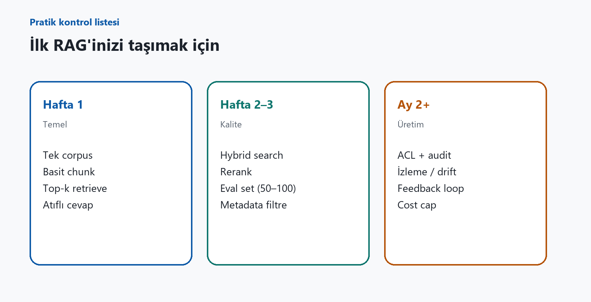

Son iki yıldır herkes aynı soruyu soruyor: “Model neden yanlış cevap veriyor?”
Cevabın çoğu zaman modelden değil, bağlamdan geldiğini unutuyoruz.
Bir LLM eğitim kesimine kadar gördüklerini geneller. Şirket PDF’iniz, dünkü politika değişikliğiniz veya dahili ticket’larınız o ağırlıklarda yoktur. Model “bilmiyorum” demek yerine çoğu zaman ikna edici bir uydurma üretir.
Bu boşluğu kapatan mimariye RAG denir: Retrieval-Augmented Generation — önce bul, sonra üret.
Neden RAG?
Saf LLM’nin üç kör noktası vardır:
- Bilgi kesimi — Eğitim tarihi sonrası olayları bilmez.
- Halüsinasyon — Kaynak yoksa güvenle uydurabilir.
- Gizli / kurumsal veri — Şirket belgeleri modelde yoktur (ve olmamalıdır).
RAG bu üç sorunu “modeli yeniden eğit” demeden çözer: ilgili parçayı dışarıdan getirir, prompt’a koyar, modeli o kanıta bağlı tutar.

RAG nasıl çalışır? (6 adım)
- Kaynak — PDF, wiki, Notion, SQL, ticket, e-posta arşivi…
- Chunk — Belgeleri anlamlı parçalara böl.
- Embed — Her parçayı embedding modeli ile vektöre çevir.
- Index — Vektör veritabanına yaz.
- Retrieve — Soruya en yakın k parçayı getir.
- Generate — Kanıta dayalı cevap üret; yoksa “bilmiyorum” de.
Kritik nokta: RAG “daha akıllı model” demek değildir. RAG, doğru parçayı doğru zamanda bağlama koyma mühendisliğidir.

Saf LLM vs RAG
| Saf LLM | RAG | |
|---|---|---|
| Bilgi | Eğitim seti | Canlı / kurumsal kaynak |
| Atıf | Zayıf / yok | Parça + belge referansı |
| Güncellik | Eğitim kesimi | İndeks güncellemesi |
| Gizli veri | Modele gömmek riskli | ACL ile retrieval |
| Hata tipi | Halüsinasyon | Yanlış retrieval / kötü chunk |

Anatomi: bir RAG sisteminin parçaları
- Ingestion — Parser, chunker, metadata
- Retrieval — Dense + hybrid + reranker
- Generation — Prompt, citation, guardrail
- Eval & Ops — Faithfulness, maliyet, drift
- Security — ACL, PII, audit
- UX — Kaynak önizleme, feedback
İyi retrieval kötü LLM’i kurtarabilir; kötü retrieval en iyi modeli de batırır.

Pratikte en çok yapılan hatalar
- Chunk’ı umursamamak — metadata kaybolunca retrieval körleşir.
- Sadece cosine — hybrid (BM25 + dense) çoğu kurumsal aramada daha iyi.
- Eval’siz canlıya çıkmak — 50–100 soruluk altın set şart.
- Atıf göstermemek — kullanıcı doğrulayamaz.
- Yetkisiz retrieval — belge seviyesinde ACL zorunlu.
- Her şeyi fine-tune ile çözmek — sık değişen bilgi için RAG.
Ne zaman RAG, ne zaman fine-tune?
- RAG: Sık güncellenen bilgi, çok kaynak, atıf zorunlu, gizlilik.
- Fine-tune: Üslup, format, domain dili, sabit davranış.
- İkisi birlikte: Fine-tune davranışı öğretir; RAG gerçeği getirir.
30 günlük yol haritası
Hafta 1 — Temel: Tek corpus, basit chunk, top-k, atıflı cevap.
Hafta 2–3 — Kalite: Hybrid, rerank, eval set, metadata filtre.
Ay 2+ — Üretim: ACL + audit, izleme, feedback, maliyet tavanı.

Kapanış
RAG bir “prompt numarası” değil; bilgi erişim + üretim disiplini.
Modeli büyütmek her sorunu çözmez. Çoğu zaman eksik olan şey daha büyük bir model değil — doğru belgenin, doğru parçanın, doğru yetkiyle, doğru anda bağlama girmesidir.
Model ezberlemesin. Doğru kaynaktan çeksin.
LinkedIn’e taşımak için
Metin: docs/linkedin-rag-makale.md · Görseller: docs/rag-assets/*.png — kapaktan checklist’e sırayla ekleyin.